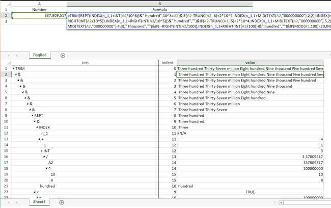
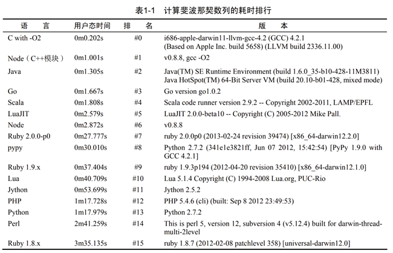
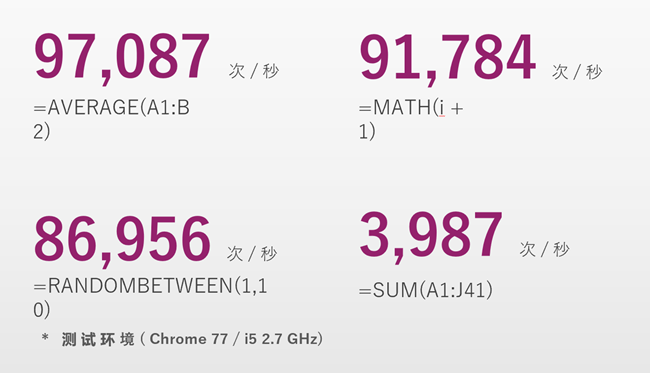
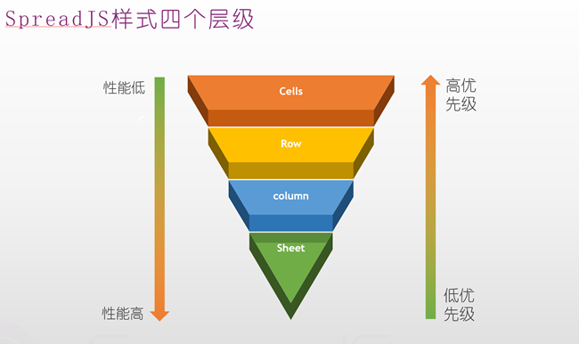

深入SpreadJS（续）：
2. 计算引擎：
据官方介绍来看，公式引擎其实是包含了两大实现的部分，一个是计算逻辑系统、一个是引用系统。
<1> 引用系统：
Excel中公式的计算都是依赖于某些原始数据的，比如C1引用B1、B1又引用A１等等，实际上当我在写这篇文章前，对Excel的引用体系还不甚清楚，主要原因还是因为SpreadJS把这部分功能封装的已经非常原生化了，根本不需要开发者操心（除非有引用回溯等特殊需求）。
Excel中有直接引用、跨Sheet表单引用、相对/绝对引用、命名信息的引用、table行列公式的引用、跨工作簿引用等等（没列举完，感兴趣的同学可以自行搜索学习）。SpreadJS的runtime是在网页端，因此跨Workbook引用就别想了，至少目前肯定没支持。不过Excel其它所有的引用方式都已经完全实现，包括刚才括号里提到的引用回溯。（佩服一下，牛Bee~）
<2> 计算逻辑：
SUM、IF、MATCH、VLOOKUP这种能输入到单元格里的计算公式，用起来就像是一个个的小“逻辑包”，目前SpreadJS有460+种原生的公式函数，而Excel只有490+种，并且SpreadJS能自定制公式，使用体验与原生公式一样。
对于底层实现，实际上经过多个版本的迭代，这些公式早已不是一个个独立的“逻辑孤岛”了。公式的实现在底层有大量的抽象和复用，据说新版本在性能提升的同时，代码量比老版本有明显精简，这对前端工程打包也是比较友好的。
对于嵌套公式计算的实现，SpreadJS在底层建立起了AST树来解析用户设置公式的计算逻辑，从官方示例的代码来看，公式底层建立了一套Expression，并且有对应的public接口可供调用，如图：

图片来源：【SpreadJS公式结构树形展示】
<3> 性能：
首先，作为一个前端技术，咱们可以先从公式计算的技术要求上来分析性能可能出现的瓶颈以及造成的影响。我们在开发时用到了大量的用户事件、脏数据、联动等功能，所有这些功能确保正确运行的一个重要前提，就是必须能确保随时可以拿到正确的计算结果，那么最直接的实现思路就是让公式以高优先级、同步的方式来执行完计算。
大家都知道，多线程可以帮助分担计算压力，但是先抛开设计和实现难度不说，即便支持了Web Worker，JavaScript严格来说也只能算是一个单线程语言，因为它的Web Worker子线程完全受主线程控制，并且主线程无法被阻塞挂起。所以即使引入了WebWorker，也无法确保上边提到的同步执行。
经过以上分析，可以看出公式计算性能的局限性，取决于JavaScript的计算能力。我找了一张相关的图片，可以直观反映Node.js的计算能力（Node.js是V8引擎，公认最快的JS引擎）

图片引用自《深入浅出Node.js》
而SpreadJS官方给出了一组公式的计算数据，参考如下：

据我们测试，以上计算性能接近原生JS的计算性能，SpreadJS在这方面的优化已经十分接近物理极限了。目前在我们的应用场景中，这个计算性能已经足够使用，但不排除以后会出现海量的数据和公式的计算需求，而在这方面官方也给出了相关解决方案，参考这里。
据说，官方还在进一步开发缓存技术，来实现公式计算的分块缓存：即使引用链上有值发生变化，也不需要计算整个引用链的公式。听起来很强大，思路也靠谱，但愿早点推出。
3. 样式系统：
Excel的样式系统非常复杂，边框、字体、对齐、数据格式、条件格式等等每一个功能点都有非常灵活庞大的实现，刚开始了解SpreadJS时，我也被它的Style类惊呆了，除了我能想象到的边框、背景、字体、对齐等这些能“看得到”的，竟然也有单元格类型、数据格式、表格按钮、下拉、水印这类东西。不由得感叹Style太重了，如果定制大量的单元格样式，内存和性能肯定都不好。不过实际应用中倒也没发现瓶颈，原来这里采用了分层结构来设计，如图：

图片来源：葡萄城公开课【SpreadJS性能优化】
鉴于篇幅，大家有兴趣可以自行了解这方面的知识，除了图片来源的公开课地址，还推荐一篇博客：如何理解和应用SpreadJS中的样式（Style）
总结：
也许以后我可能不会再有机会用到SpreadJS，但在过去这一年中，无论从技术、思想，还是产品、需求、场景等等，我都获得了巨大的收获。这篇文章也是为了总结我曾与SpreadJS擦出的火花。
不积跬步，无以至千里。做过的事情、思考过的问题、踩过的坑和Coding中的灵感，对我来说都是宝贵的经历。知识往往是刚学到的时候最清楚，技能往往也是刚用过的时候最熟练，如果不总结输出，很多东西可能随着时间的推移都会被遗忘掉，这样无疑是对自己青春和时间的浪费。
对于一名前端Web工程师，写博客无疑是一种非常好的积累、总结、复盘方式，我的博客计划将会持续下去，如果有小伙伴感兴趣，希望能够关注我，期待与大家的交流。